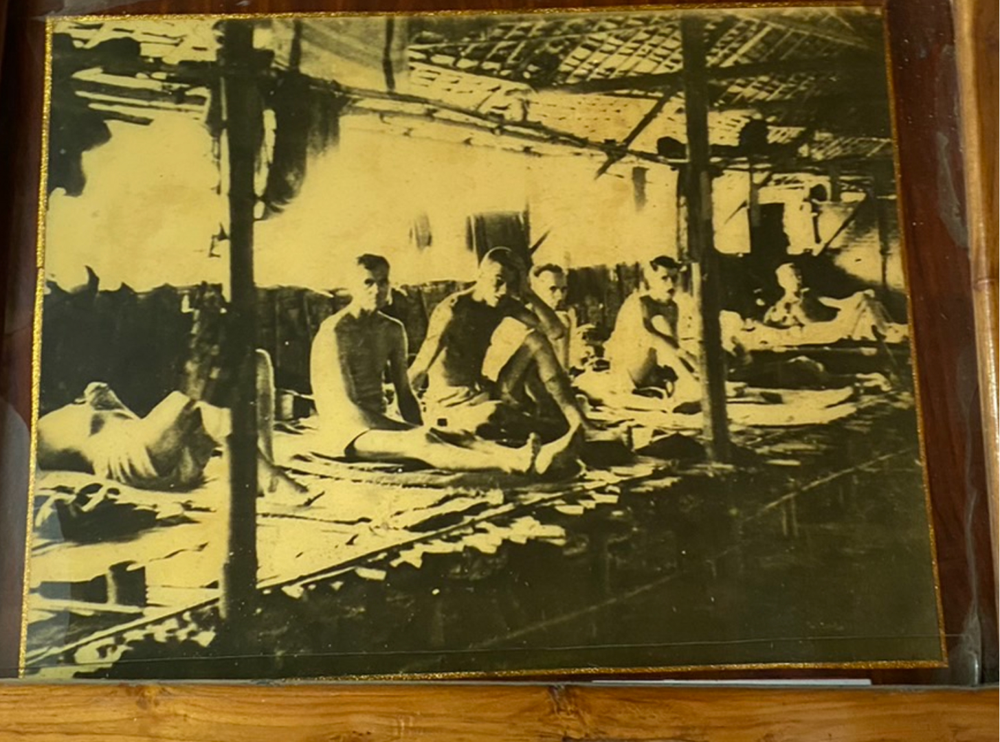
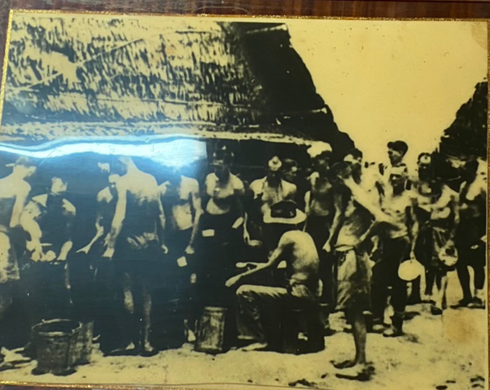
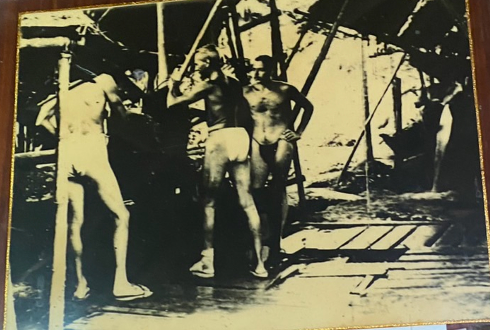
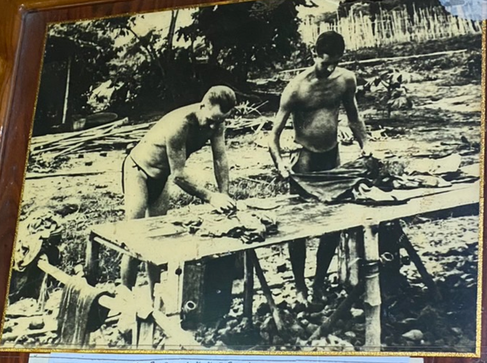
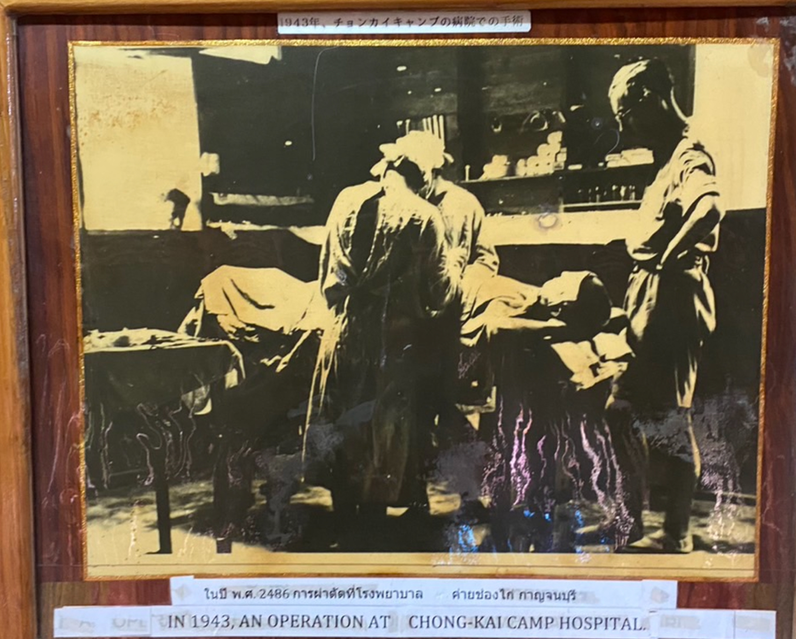

นับตั้งแต่ พ.ศ. 2485 - พ.ศ. 2488 รวมระยะเวลาเกือบ 3 ปี ที่ทหารญี่ปุ่นเข้ามาปฏิบัติหน้าที่ใน
จังหวัดกาญจนบุรีโดยเกณฑ์แรงานต่างชาติมาสร้างทางรถไฟเชื่อมต่อระหว่างประเทศไทยกับประเทศพม่า
เพื่อใช้เป็นเส้นทางลำเลียงอาวุธยุทโธปกรณ์
เสบียงอาหารและกำลังพลเข้าบุกประเทศพม่านั้นการเข้ามาของคนต่างชาติเหล่านี้ได้ก่อให้เกิดการเปลี่ยนแปลงในจังหวัดกาญจนบุรีอย่างมาก
การประกอบอาชีพของประชากรในขณะนั้นอาชีพส่วนใหญ่คือการเกษตรกรรม และการทำเหมืองแร่
ส่วนการประกอบอาชีพค้าขาย
มักจะเป็นคนไทยเชื้อสายจีนเสียเป็นส่วนมาก
ช่วงก่อนที่กองทัพญี่ปุ่นจะยกพลขึ้นบกที่ประเทศไทยประมาณ 2 ปี (ราว พ.ศ. 2482)
มีชาวญี่ปุ่นมาตั้งร้านค้าขายผักและของชำต่างๆ
ในตลาดเมืองกาญจนบุรีอยู่ประมาณ 2-3 ร้าน
เมื่อกองทัพญี่ปุ่นเดินทางมาถึงจังหวัดกาญจนบุรีพ่อค้าชาวญี่ปุ่นเหล่านี้ก็แต่งกายเป็นทหาร
เข้าร่วมในกองทัพของญี่ปุ่น อันเนื่องมาจากข้อตกลงในการทำสัญญาสร้างทางรถไฟสายไทย-พม่า
ที่รัฐบาลไทยทำกับญี่ปุ่น
โดยที่รัฐบาลไทยจะรับผิดชอบในการก่อสร้างทางรถไฟจากสถานีหนองปลาดุก
จังหวัดราชบุรีมาจนถึงจังหวัดกาญจนบุรี
เป็นระยะทาง 50 กิโลเมตร ซึ่งจะต้องใช้คนงานไทยประมาณ 3,500 คน แรงงาน
จำนวนนี้จังหวัดได้ดำเนินการให้มีการเกณฑ์จ้างแรงงานจากจังหวัดสุพรรณบุรี 2,000 คน จังหวัดเพชรบุรี
ประมาณ 500 คน และจังหวัดนครปฐมประมาณ 900 คน
โดยได้ค่าจ้างวันละ 7 สตางค์ โดยที่คนงานเหล่านี้จะมีปลัดอำเภอเป็นผู้ควบคุมมาเป็นงวดๆ
จากการสัมภาษณ์ชาวบ้านที่ถูกเกณฑ์แรงงานจ้างมานี้เมื่อมาทำงานอยู่ประมาณ 1-2
เดือนก็มักจะหลบหนีกลับทั้งๆ ที่ได้ค่าจ้างครบถ้วน ทั้งนี้เพราะว่าเมื่อสร้างทางรถไฟมาถึง
บ้านท่ามะขาม จังหวัดกาญจนบุรีแล้ว กองทัพญี่ปุ่นได้ขอจ้างให้ทำงานในส่วนที่กองทัพญี่ปุ่นจะเป็น
ผู้ดำเนินการเองนั้นจะต้องสร้างทางรถไฟข้ามแม่น้ำแควใหญ่ แล้วเลาะไปตามลำน้ำแควน้อยนั้นเป็นงานที่ทำ
ด้วยความยากลำบากการหักร้างถางพงทวีความลำบากขึ้นเรื่อยๆ
และการทำทางดินเพื่อทำเป็นแนวที่จะวางรางรถไฟก็มักจะถูกน้ำจากแม่น้ำท่วมล้นฝั่งพัดพังทลายอยู่เสมอๆ
แต่อย่างไรก็ดีในระหว่างที่กองทัพญี่ปุ่นดำเนินการสร้างทางรถไฟนี้ชาวจังหวัดกาญจนบุรีก็มีอาชีพใหม่คือรับจ้างทำงานให้กับกองทัพญี่ปุ่นนี่เอง
นอกจากนี้การที่รัฐบาลมีนโยบายจะส่งเสริมให้คนไทยรู้จักและรักการค้าขายจึงได้จัดตั้งบริษัทจังหวัด
ขึ้นนั้น คือ บริษัทจังหวัดกาญจนบุรี จำกัด ซึ่งเกิดขึ้นโดยรัฐและประชาชนถือหุ้นร่วมกัน
แม้รัฐบาลจะถอนหุ้นจากบริษัทจังหวัดไปเมื่อสงครามยุติแล้ว
แต่บริษัทจังหวัดกาญจนบุรีก็ยังมีเอกชนดำเนินการต่อมา มีการขายส่ง
บุหรี่ สุรา และอื่นๆ เมื่อกองทหารญี่ปุ่นเข้ามาถึงเมืองกาญจนบุรีพร้อมทั้งนำเชลยศึกเข้ามา
เพื่อสร้างทาง
รถไฟในเขตจังหวัดกาญจนบุรีก็ก่อให้เกิดอาชีพอย่างใหม่กับชาวกาญจนบุรี ดังนี้
1. การประกอบอาชีพค้าขายกับกองทัพญี่ปุ่น
เมื่อกองทัพญี่ปุ่นเข้ามา อยู่ในเมืองกาญจนบุรีจำนวนมาก สิ่งที่จำเป็นอันดับแรก คือ อาหาร
ในช่วงแรกๆ
กองทัพก็นำอาหารกระป๋องมาด้วย แต่เมื่ออยู่นานไปอาหารที่นำมาก็ร่อยหรอ ไม่พอแจกจ่ายทหารในกองทัพ
ญี่ปุ่นจึงหาซื้อจากตลาดในเมืองกาญจนบุรี ซึ่งทำให้เกิดปัญหาในการเจรจาติดต่อซื้อขาย
กองทัพจึงใช้วิธีประมูลการจัดซื้ออาหารและยารักษาโรค และวัสดุที่ต้องใช้ในการสร้างทางรถไฟบางอย่าง
ก็ปรากฏว่าส่วนใหญ่ร้านคุณบุญผ่อง สิริเวชชะพันธ์ มักจะเป็นผู้ประมูลได้
เดิมร้านคุณบุญผ่องเป็นร้านขายของจำพวกรถจักรยาน วิทยุ และรับรักษาโรคด้วยยาสมุนไพร เมื่อร้านคุณบุญผ่อง
ประมูลจัดซื้ออาหารได้ก็จะสั่งอาหารสด ผัก และเนื้อสัตว์จากราษฎรทั่วไปในจังหวัดกาญจนบุรีหรือสั่งซื้อ
จากบ้านโป่งและนครปฐม ซึ่งทางร้านมักจะจัดหาอาหารให้ได้ครบตามจำนวนที่ญี่ปุ่นต้องการ เช่น เนื้อหมู
วันละ 28 ตัว ผักสดจำนวนมาก นอกจากนี้กองทัพญี่ปุ่นยังสั่งซื้อไม้หมอน รถไฟอีกจำนวนมาก
คุณบุญผ่องก็จะไปกว้านซื้อไร่นุ่นแถวตำบลดงสัก และตำบลพระแท่นดงรังแล้วจ้างชาวบ้านโค่น
ต้นนุ่นถากเป็นไม้หมอนรถไฟเอามาขายให้ญี่ปุ่น
สำหรับการซื้อขายไม้หมอนรถไฟให้แก่กองทัพญี่ปุ่นนี้
จากการสัมภาษณ์ประชาชนทั่วไป
พบว่ามีการทำกันหลายรายเพราะกองทัพญี่ปุ่นมีความจำเป็นต้องใช้ไม้หมอนรถไฟจำนวนมาก ในการ
ขายไม้หมอนรถไฟก็มีการโกงอย่างที่เรียก กันว่า “เวียนเทียน” กล่าวคือ เมื่อนำไม้หมอนมาส่งขายให้ทหาร
ญี่ปุ่นในตอนกลางวัน ตกลงซื้อขายกันเสร็จเรียบร้อย เมื่อถึงเวลากลางคืนชาวบ้านก็แอบมาขโมยไม้หมอน
กลับไปแล้วกลางวันก็เอามาส่งขายใหม่ จนกระทั่งทหารญี่ปุ่นจับได้
จึงต้องทำเครื่องหมายไว้ที่ไม้หมอนรถไฟที่
ตกลงซื้อขายกันแล้ว นอกจากการซื้อขายกันในลักษณะดังกล่าวแล้ว ชาวบ้านทั่วไปยังประกอบอาชีพค้าขาย
เล็กๆ น้อยๆ กับเชลยศึกโดยการนำสินค้าประเภทอาหารและผลไม้ไปขายที่บริเวณริมค่าย เช่น กล้วย
มะละกอ ไข่ต้ม กาแฟ เงินที่เชลยศึกนำมาซื้ออาหารนั้นได้มาจากการขายของใช้ส่วนตัว เช่น กล้องถ่ายรูป
นาฬิกา ร้องเท้า เสื้อผ้า หมวกสักหลาด ช้อนส้อมที่เป็นเงินแท้ๆ
ซึ่งการซื้อขายของใช้เหล่านี้เชลยศึกและผู้ซื้อ
คนไทยจะต้องแอบกระทำมิให้ทหารผู้ควบคุมชาวญี่ปุ่นเห็น ส่วนมากจะทำการซื้อขายกันตอนที่ทหารญี่ปุ่นคุม
เชลยศึกลงไปอาบน้ำที่แม่น้ำ เมื่อคนไทยซื้อของใช้เหล่านี้มาได้ก็จะเอาไปขายตามชนบทได้ราคาดีมาก
โดยเฉพาะเสื้อผ้าเพราะในช่วงสงครามได้เกิดการขาดแคลนเสื้อผ้าอย่างมาก คนไทยที่ประกอบอาชีพนี้บางกลุ่ม
ร่ำรวยกลายเป็นเศรษฐีไปหลายคน นอกจากนี้ยังมีคนไทยบางกลุ่ม อาทิเช่น นายสนั่น ประสมทรัพย์ ซึ่งเดิม
เป็นครูสอนที่โรงเรียนวิสุทธรังษี ได้ลาออกจากการเป็นครูไปประกอบอาชีพค้าขายด้วยการติดตามขบวนของ
กองทหารญี่ปุ่นและเชลยศึกที่อพยพค่ายไปเรื่อยๆ เพื่อการสร้างทางรถไฟ โดยไปเปิดเป็นร้านเล็กๆ ขายของ
ใช้ที่จําเป็นและอาหาร อาจมีหญิงบริการด้วย ตามรายทางไปจนถึงเขตเมืองมะละแหม่งในพม่า โดยจะนำสินค้า
ประเภทอาหารและของใช้ อาทิเช่น สบู่ น้ำมันมะพร้าว เครื่องกระป๋อง อาหารแห้ง น้ำตาลปี๊บไปขาย
โดยเดินทางไปกับขบวนรถไฟของญี่ปุ่นนั่นเอง เมื่อขายสินค้าหมดแล้วก็หาซื้อสินค้าจากเมืองมะละแหม่ง อาทิ
เช่น ผ้า ยา โดยเฉพาะยาเอ็มบี (รักษาโรคซิฟิลิส) กลับมาขายคนไทยได้กำไรอย่างมาก เช่น น้ำตาลปี๊บซื้อไป
ราคาใบละ 20 บาท แต่สามารถนำไปขายได้ราคาปี๊บละ 100 บาท ยาเม็ดเอ็มบีนั้นขายได้ราคาดีถึงเม็ดละ 25
บาท โดยเฉพาะในช่วงปลายสงคราม นอกจากนายสนั่น ประสมทรัพย์ แล้วยังมีคนไทยอีกจํานวนมาก
ทําการค้าขายในลักษณะนี้
2. การรับจ้างทำงานกับกองทัพญี่ปุ่น
คนไทยจำนวนหนึ่งที่ไม่เกรงกลัวคนต่างชาติและรู้ช่องทางใน
การทำงานกับกองทัพญี่ปุ่นได้สมัครเข้าทำงานในค่ายเสบียงของกองทัพญี่ปุ่น ซึ่งตั้งอยู่ริมทางรถไฟสถานี
ปากแพรกมีหน้าที่เย็บเสื้อผ้า ทหารโดยได้ค่าแรงวันละ 80 สตางค์ หรือรับจ้างเป็นช่างซ่อมรถจักร และมีคน
ไทยอีกจำนวนหนึ่งที่รับจ้างสร้างค่ายกองบัญชาการของกองทัพญี่ปุ่นและค่ายเชลยศึก นอกจากนี้การที่รัฐบาล
ไทยตกลงทำสัญญาสร้างทางรถไฟกับญี่ปุ่นนั้น ฝ่ายไทยจะต้องเป็นฝ่ายจัดหาคนงานให้กับกองทัพญี่ปุ่นจึงต้อง
มีการเกณฑ์จ้างแรงงานไทยไปทำงานสร้างทางรถไฟโดยทำหน้าที่ถางป่ากรุยทางไปเรื่อยๆ โดยได้ค่าจ้างวันละ
ประมาณ 3-4-5 บาท แต่เมื่อทำงานเข้าป่าลึกไปเรื่อยๆ เป็นงานที่ลำบาก ไข้ป่าชุกชุม อาหารการกินก็ลำบาก
แม้จะได้ค่าจ้างสูงถึงวันละ 20 บาทก็ไม่ค่อยมีใครอยากไปทำ รัฐบาลไทยจึงต้องออกกฎหมายเกณฑ์จ้างคนงาน
ไทยไปทำงานโดยให้ผู้ใหญ่ไปเกณฑ์จ้างชาวบ้านมาครอบครัวละ 1 คน
3. เรื่องราวความสัมพันธ์ระหว่างคนในพื้นที่กับทหารญี่ปุ่น และเชลยสงคราม ทั้งการค้าขาย การใช้
เป็นสถานที่พักอาศัย และจัดเก็บอาวุธ ซึ่งเกิดขึ้นบนถนนปากแพรกและบ้านหลายหลังอันได้แก่
บ้านรัตนกุสุมภ์ บ้านสหกุลพาณิชย์ บ้านสิริโอสถ บ้านนิวาศแสนสุข บ้านสุธี บ้านแต้มทอง
(มีชุดทหารญี่ปุ่น) บ้านตระกูล
กาญจนมาศ บ้านศิวภา บ้านศรีจำนง ที่ทำการทหารสารวัตรญี่ปุ่น บ้านสายลับ และ บ้านศิริชุมแสง เป็น
ต้น ข้อมูลและเรื่องราวของบ้านเหล่านี้ท่านสามารถเรียนรู้เพิ่มเติมได้จาก แผนที่ทุนทางวัฒนธรรม Cultural
Mapping
ซึ่งภาพที่ท่านกำลังรับชมผ่าน AR และ 4 รวมถึงภาพที่จัดแสดงอยู่ในห้องนี้ ล้วนเป็นภาพที่บ่งบอกถึง
ผลกระทบของสงคราม ที่ส่งผลให้สภาพวิถีชีวิตของชาวจังหวัดกาญจนบุรีที่เปลี่ยนแปลงไปจากเดิม ภายใต้
สภาวสงคราม อันประกอบด้วย ภาพวิถีชีวิตของเชลยในค่ายช่องไก่ การรักษาพยาบาล อุปกรณ์การแพทย์
และ การซื้อขายสินค้ากับชาวบ้านในห้วงเวลานั้น




